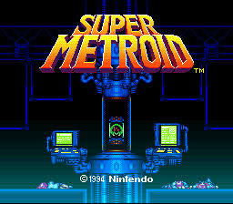
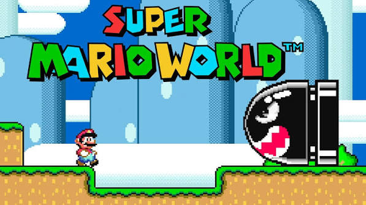
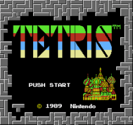
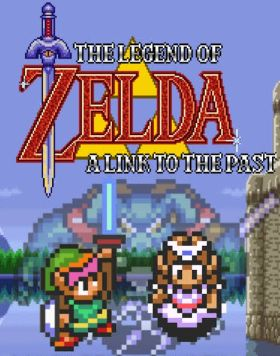
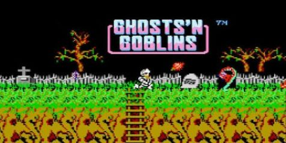
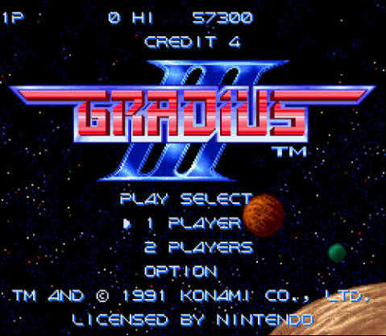
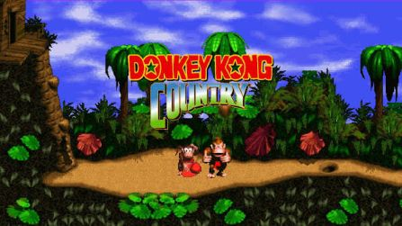
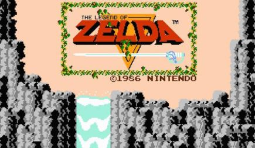
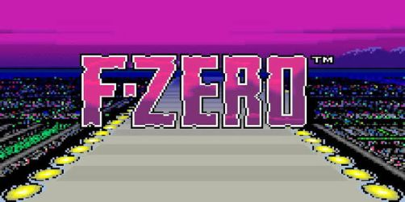

Top 10 Single-Player Games
#1: Super Metroid
This game is absolutely amazing! Taking the top spot on the single-player list is Super Metroid, a 16-bit masterpiece that nails the balance between freedom and structure. Unlike overwhelming open-world games, Zebes feels tightly crafted and rewarding—packed with hidden passages, secret upgrades, and clever puzzles that give you plenty of room to explore and figure things out at your own pace. Its pacing hits the sweet spot: long enough to feel like an epic journey, yet tight enough to keep you hooked from start to finish. Paired with atmospheric pixel graphics, responsive controls that make Samus a joy to maneuver, and creative, memorable boss battles, Super Metroid sets the gold standard for solo retro gaming.

#2: Super Mario World
Super Mario World is a timeless classic that redefined platforming with its innovative gameplay and vibrant world. Although it can be played with a second player, the single-player experience is where it truly shines. The game introduces the beloved Yoshi character and offers a perfect blend of exploration, challenge, and fun. Tons of secret exits and hidden levels keep players engaged, while the tight controls and imaginative level design make every jump and power-up feel satisfying. With its creative level design and memorable soundtrack, it remains a favorite among fans of all ages.

#3: Tetris
Tetris is a timeless puzzle game that has captivated players for decades. With its simple yet addictive gameplay, it offers a perfect balance of challenge and satisfaction. The game's intuitive mechanics and satisfying block placement make it enjoyable for both casual and dedicated players.

#4: A link to the Past
A link to the Past is a masterpiece of adventure gaming that combines engaging storytelling with innovative gameplay mechanics. The game features a vast, interconnected world filled with secrets to discover and puzzles to solve. Each dungeon presents unique challenges, requiring players to think critically and adapt their strategies. Its seamless blend of exploration, combat, and magic creates an immersive experience that has stood the test of time.

#5: Ghosts 'n Goblins
Ghosts 'n Goblins is a challenging platformer that tests players' skills and patience. If you are looking for a game that will test your skills and patience, Ghosts 'n Goblins is the perfect choice. It is the spitting image of live die repeat. With its demanding difficulty and unique art style, it offers a distinct gaming experience that has garnered a dedicated following.

#6: Gradius III
Gradius III is a fast-paced shoot-em-up that pushes the boundaries of the genre with its intense action and challenging gameplay. It's a classic space shooter that requires quick reflexes and strategic thinking to navigate through waves of enemies and obstacles. The game features a variety of weapons and power-ups that allow players to customize their ship and adapt to different enemy patterns. With its vibrant visuals and catchy soundtrack, it provides an engaging experience that keeps players coming back for more.

#7: Kirby's Adventure
Kirby's Adventure is a beloved platformer that follows the iconic pink puffball as he embarks on a journey to save his home planet. With its charming art style and accessible gameplay, it offers a delightful experience for players of all ages. It's a relatively easy game, but it has a lot of depth and replayability, making it a great choice for both casual and dedicated gamers. The game features a variety of power-ups and abilities that allow players to explore different areas and overcome unique challenges.
#8: Donkey Kong Country
Donkey Kong Country is a side-scrolling platformer that follows the adventures of Donkey Kong and his friends. With its vibrant visuals and catchy soundtrack, it provides an engaging experience that keeps players coming back for more. The game features a variety of levels and challenges that test players' skills and reflexes.

#9: The Legend of Zelda
The Legend of Zelda is a groundbreaking action-adventure game that set the standard for the genre. With its expansive world, engaging puzzles, and memorable characters, it offers an immersive experience that has captivated players for decades. The map is vast and filled with secrets, encouraging exploration and rewarding curiosity. The game's innovative mechanics and open-ended exploration allow players to approach challenges in their own way, making each playthrough unique.

#10: F-Zero
F-Zero is a high-speed racing game that pushes the limits of the Super Nintendo Entertainment System. With its fast-paced gameplay and futuristic setting, it offers an adrenaline-pumping experience that keeps players on the edge of their seats. The game features a variety of tracks and vehicles, each with its own unique characteristics and challenges. Its tight controls and responsive handling make it a joy to master.
